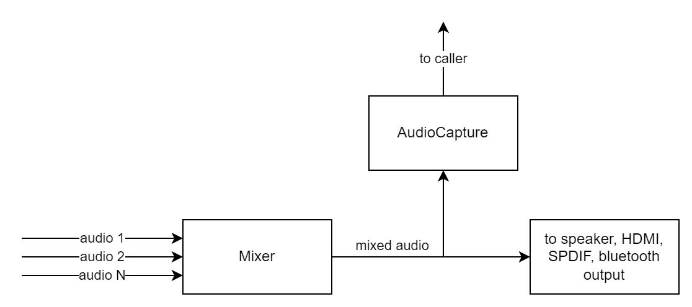

RMF Audio Capture HAL Documentation
Table of Contents
- Acronyms, Terms and Abbreviations
- Description
- Component Runtime Execution Requirements
- Initialization and Startup
- Threading Model
- Process Model
- Memory Model
- Power Management Requirements
- Asynchronous Notification Model
- Blocking calls
- Internal Error Handling
- Persistence Model
- Non-functional requirements
- Logging and debugging requirements
- Memory and performance requirements
- Quality Control
- Licensing
- Build Requirements
- Variability Management
- Platform or Product Customization
- Interface API Documentation
- Theory of operations
- Diagrams
Acronyms, Terms and Abbreviations
API- Application Programming InterfaceHAL- Hardware Abstraction layerPCM- Pulse Code ModulationRDK- Reference Development KitRMF- RDK Media FrameworkSTB- Set Top BoxCaller- Any user of the interface
Description
RMF Audio Capture HAL must deliver a constant stream of raw audio data (PCM) to the caller. The purpose of audio capture is to tap the final mix of the decoded audio. The audio data delivered via this interface is required to track as closely as possible, i. e., minimal latency,
to the audio that's being rendered by the device at a given point of time. Audio Capture must support capture of primary audio, and may optionally support auxiliary audio (alternate language audio tracks etc.) as well. Where auxiliary audio is supported, HAL must be able to support concurrent capture sessions
for both primary and auxiliary audio. However, caller will not seek to open more than one instance of a capture per source at any point of time.
Should a situation arise where there is no audio data available to capture (eg: no active video playback), HAL must continue to send buffers
to caller that are filled with silence. HAL must maintain the expected data rate for the format while doing so.
As far as audio format support is concerned, HAL is not required to support all formats and sampling rates defined in the header file. However, 16-bit stereo PCM format must be supported at a sampling rate of 44.1kHz or higher.

Component Runtime Execution Requirements
These requirements ensure that the HAL executes correctly within the run-time environment that it will be used in.
Initialization and Startup
Caller is expected to have complete control over the lifecycle of Audio Capture HAL (from open to close).
Threading Model
This interface is required to be thread-safe and will be invoked from multiple caller threads. Data callback RMF_AudioCaptureBufferReadyCb() must originate in a thread that's separate from caller context(s). Caller will not make any HAL calls in the context of
RMF_AudioCaptureBufferReadyCb() and RMF_AudioCapture_StatusChangeCb().
Process Model
Caller will take care of Audio Capture HAL initialization. The interface is expected to support a single instantiation with a single process.
Memory Model
Audio Capture HAL is responsible for its own memory management. The buffer used for audio data passed by RMF_AudioCaptureBufferReadyCb() must be managed
after the callback returns.
Power Management Requirements
This interface is not required to be involved in any power management funtionality.
Asynchronous Notification Model
No asynchronous notification is required.
Blocking calls
The following callbacks may block depending on the caller's internal operations but will endeavour to return as soon as possible.
RMF_AudioCaptureBufferReadyCb()RMF_AudioCapture_StatusChangeCb()
Internal Error Handling
All APIs must return errors synchronously as a return argument. The interface is responsible for managing its internal errors.
Persistence Model
There is no requirement to persist any settings information. The necessary parameters will be passed with RMF_AudioCapture_Start() for every audio capture session.
Non-functional requirements
The following non-functional requirements are required to be supported by this interface:
Logging and debugging requirements
This interface is required to support DEBUG, INFO and ERROR messages. DEBUG is required to be disabled by default and enabled when needed.
Memory and performance requirements
This interface is required to use only minimal memory/CPU resources while in closed/stopped state.
Quality Control
- This interface is required to perform static analysis, our preferred tool is Coverity.
- Have a zero-warning policy with regards to compiling. All warnings are required to be treated as errors.
- Copyright validation is required to be performed e.g.: Black duck, FossID.
- Use of memory analysis tools like Valgrind are encouraged to identify leaks/corruptions.
HALTests will endeavour to create worst case scenarios to assist investigations.- Improvements by any party to the testing suite are required to be fed back.
Licensing
The Audio Capture header file is released under Apache 2.0 license. The implementation may use any license compatible with the aforementioned header file.
Build Requirements
This interface is required to build into shared library. The shared library must be named librmfAudioCapture.so. The building mechanism must be independent of Yocto.
Variability Management
Any new API introduced must be implemented by all the 3rd party modules. Currently there is little to no variability expected across various implementations. Any change to the interface must be reviewed and approved by component architects and owners.
Platform or Product Customization
The default settings returned via RMF_AudioCapture_GetDefaultSettings() will be configured with parameters that are favourable to the implementation. The caller will typically not change any of these parameters unless strictly necessary.
Interface API Documentation
API documentation is provided via doxygen comments in the header file.
Theory of operations
Caller will configure Audio Capture interface with the necessary settings and start the capture. HAL will deliver audio and status updates
via the registered callbacks in a timely fashion. Calling RMF_AudioCapture_Open() is a necessary precondition for the remaining APIs to work.
Architecture Diagram
flowchart
D[Caller] --> |control| E[Audio Capture HAL]
E --> |audio data| D
```
Following is a typical sequence of operation:
1. Open the interface using `RMF_AudioCapture_Open()` or `RMF_AudioCapture_Open_Type()`.
2. Get default settings using `RMF_AudioCapture_GetDefaultSettings()`. This returns a struct of parameters favourable to the `HAL`. Application may tweak certain members of this struct and pass it with the start call.
3. Start audio capture using `RMF_AudioCapture_Start()`. The interface will continuously deliver audio data to `caller` in real time via callback `RMF_AudioCaptureBufferReadyCb()`.
4. When the audio stream is no longer needed, stop audio capture using `RMF_AudioCapture_Stop()`. This will stop the 'HAL' callbacks.
5. Close the interface using `RMF_AudioCapture_Close()`.
### Diagrams
#### Operational call sequence
```mermaid
sequenceDiagram
caller->>HAL: RMF_AudioCapture_Open()/RMF_AudioCapture_Open_Type()
activate HAL
HAL-->>caller: handle
deactivate HAL
caller->>HAL: RMF_AudioCapture_GetDefaultSettings()
activate HAL
HAL-->>caller: default settings
deactivate HAL
caller->>caller: generate settings from default settings
caller->>HAL: RMF_AudioCapture_Start(handle, settings)
activate HAL
loop as long as stop is not called
HAL->>caller:RMF_AudioCaptureBufferReadyCb(audio buffer)
activate caller
caller->>caller:consume buffer
caller-->>HAL: return
deactivate caller
end
caller->>HAL: RMF_AudioCapture_Stop(handle)
deactivate HAL
caller->>HAL: RMF_AudioCapture_Close(handle
```
#### State machine Diagram
```mermaid
stateDiagram-v2
[*] --> Open: Open()
Open --> Started: Start()
Started: Started\n(pumping data)
Started --> Open: Stop()
Open --> Closed: Close()
Closed --> [*]